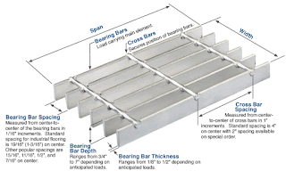
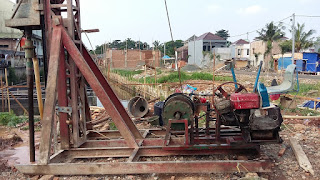

Jual Floor Deck Harga Murah di Salatiga ☎ 0822 4582 0777 (Rinanti)
Atap adalah hal yang paling penting saat membangun sebuah bangunan. Layaknya projek pembangunan yang magak di tengah jalan karena tidak mempunyai atap yang bisa dipakai di atasnya. Pada kesempatan kali ini saya akan membahas beberapa jenis atap, seperti atap galvalum, atap lengkung, seng gelombang, plat seng & plat galvalum dan masih banyak lagi. Keberadaannya tidak kalah penting, dikarenakan fungsinya adalah menyangga. Ada pula atap galvalum dengan bentuk unik seperti atap lengkung, gelombang dan lain sebagainya.
Distributor & Supplier Floor Deck (Bondex)

Jika dibandingkan dengan triplek maupun bahan lain yang digunakan untuk membuat sebuah dek, ada beberapa kelebihan Floor Deck yang tidak dimiliki oleh beberapa bahan lain tersebut. Umumnya Floor Deck digunakan sebagai alas pada saat proses pembuatan lantai maupun atap dari dak beton. Floor deck merupakan material yang tahan terhadapa api di bandingkan dengan material kayu lainnya. Bentuk dari Floor Deck ini umumnya bergelombang serta dari segi ukurannya selalu sama, yaitu 5 cm. Pasak Floordeck yang berupa rusuk-rusuk panel tertanam dengan kuat didalam beton yang membuat seluruh panel menjadi tulangan positif searah yang sangat kuat.
Disana tersedia berbagai macam ukuran dari floor deck Salatiga yang bisa anda beli sesuai dengan kebutuhan anda.
Info Pemesanan Selengkapnya
Google Maps: https://www.google.com/maps/d/u/0/viewer?mid=1vSGA7eD7ctB-ierGsro9yf6LdDAQHeLS&ll=-6.2537250295094555%2C106.82745&z=15
Note: https://www.facebook.com/notes/distributor-of-industrial-supply/kontraktor-jasa-floor-hardener/1783168878649658/
Event: https://www.facebook.com/events/534395173592364/
Portfolio Produk: https://www.facebook.com/1681607345472479/photos/?tab=album&album_id=1685055588460988
Distributor & Supplier Besi Beton

Beragam jenis beton tersebut bisa diaplikasikan untuk berbagai kebutuhan pembangunan. Besi beton ulir yaitu besi beton dengan bentuk permukaan khusus bentuk sirip melintang seperti ikan ataupun dengan rusuk memanjang dan memiliki pola tertentu yang dipilih pada proses produksinya. Berbagai macam tipe tersebut bisa Anda gunakan untuk pembangunan. Berikut fungsi dan kelebihan dari besi beton yaitu memiliki tekanan yang kuat dan lebih tinggi dibandingkan dengan bahan lainnya, tahan terhadap api dan air dan juga memiliki struktur terbaik pada bangunan jika banyak bersentuhan dengan air, memiliki struktur yang cukup kokoh, tidak memerlukan biaya pemeliharaan yang cukup tinggi, dapat dirakit dalam bentuk yang sangat beragam dan masih banyak lagi kelebihan yang bisa anda dapatkan dengan menggunakan Besi beton.
Besi beton terkenal sebagai bentuk besi yang memiliki kekuatan besar dan tahan terhadap berbagai guncangan dan tekanan.
Segera kunjungi dis.or.id untuk mendapatkan besi beton yang anda inginkan. Di sana anda akan mendapatkan berbagai macam jenis serta ukuran dari besi beton dengan harga yang cukup terjangkau dan mutu yang sangat terjamin. Jadi, anda tidak perlu ragu lagi.
Distributor & Supplier Steel Grating

Plat Grating tersebut dibuat dari jenis baja dengan kualitas yang tinggi kemudian dilas antara satu dengan yang lain. Steel Grating yang terbuat dari baja berkualitas ini dilapisi dengan Galvanis. Karena harga murah tidak menjamin adanya kualitas yang terbaik. Bahan yang berkualitas ini memudahkan para konsumen dalam melakukan pembangunan dengan memperoleh hasil maksimal.
Terdapat banyak jenis steel grating yang di jual sehingg anda dapat dengan mudah memilih sesuai dengan kebutuhan. Memesan steel grating di dis.or.id pastinya anda tidak akan merasa rugi.
Distributor & Supplier Pipa (Hitam/Gas, Galvanis)

Apa bedanya pipa hitam gas dibanding dengan jenis pipa biasa? Perbedaan antara kedua pipa ini bisa anda lihat langsung pada pengaplikasiannya. Setiap konstruksi bangunan pasti akan memanfaatkan jenis pipa hitam karena ia sangat kokoh, bahkan bagian luarnya telah terlapis oleh stainless steel sehingga menjadikannya tahan korosi. Terlihat dari namanya saja, pipa hitam ini memang dibuat khusus untuk kebutuhan pertambangan minyak gas, untuk itu nama lain dari pipa hitam adalah pipa gas. Untuk itu, anda bisa aplikasikan pipa hitam di segala wilayah indonesia karena ia tahan korosi cuaca. Tentukan kebutuhan pipa hitam anda pada kami, tersedia ukuran ½ inc sampai 40 inc. Anda dapat mengkonsultasikan keperluan pipa hitam tersebut pada kami dan mengetahui informasi harganya lebih detail.
Distributor & Supplier Kawat Bronjong/Gabion

Kawat bronjong dikenal sebagai anyaman yang terbuat dari kawat di mana tujuannya agar tebing yang tinggi tidak longsor. Umumnya, kawat ini dipasang di tebing yang rawan sekali mengalami longsor, terutama ketika musim hujan tiba. Ini berbentuk seperti anyaman yang terbuat dari kawat biasa. Hanya saja, Anda harus tahu kawat ini terbuat dari baja. Maka dari itu, kekuatannya untuk menahan tebing tinggi yang mungkin bisa longsor tidak perlu dipertanyakan lagi.
Disan anda bisa mendapatkan informasi tentang kawat bronjong dengan berbagai ukuran dan harga yang pastinya sangat terjangkau. Sehhingga, anda bisa leluasa memilih kawat bronjong mana yang susuai dengan yang anda butuhkan.
Distributor & Supplier WF H-beam

Besi WF kini menjadi jenis baja struktural yang banyak dikenal masyarakat saat ini. Kekuatan yang dimiliki oleh besi ini memang terbukti kuat dan sangat tinggi. Untuk membuat bangunan seperti rumah, pagar, industri, jalan raya, pabrik, dan lain-lain Anda bisa memakai jenis besi ini. menggunakan besi ini tidak perlu khawatir keberatan karena terbukti ringan dengan komponen yang bagus dan seimbang.
Jika membawanya Anda juga tidak perlu khawatir keberatan karena besi ini lebih ringan dan praktis.
Kini anda bisa mendapatkan besi WF H-beam dengan sangat mudah, caranya anda bisa langsung saja datang ke dis.or.id. Disana anda bisa mendapatkan besi tersebut dengan kualitas terbaik serta harga yang sangat terjangkau. Segera kunjungi situs tersebut dan dapatkan penawaran menarik.
Distributor & Supplier Expanded Metal

Expanded metal atau yang biasa dikenal dengan sebutan X.P.M. ini merupakan salah satu produk hasil dari kemajuan teknologi saat ini. Dimana Expanded Metal ini dibuat dengan menggunakan baja berkadar karbon rendah tanpa di las, tanpa sambungan dan dikenal lebih kuat. Expanded Metal memiliki keunggulan dibandingkan dengan yang lain dari sisi kekuatannya yang cukup bagus serta biasa digunakan sebagai instalasi pagar, lantai, ataupun dinding.
Jika anda saat ini sedang mencari dan membutuhkan expanded metal, ada baiknya anda mengunjungi dis.or.id. Terdapat berbagai ukuran dari expanded metal yang bisa anda pilih dan anda pesan sekarang juga. Kunjungi dis.or.id untuk memesan expanded metal dengan harga yang murah serta mutu yang terjamin.
Distributor & Supplier Plat (Hitam, Kapal, Bordes, Strip)

Plat yang satu ini mungkin yang paling banyak kita jumpai, bukan sebagai plat bahan bangunan namun sering digunakan sebagai plat lantai pabrik, kendaraan dan berbagai fungsi lainnya. Namun yang terpenting pastikan anda membeli plat besi SNI.
Dis.or.id juga menawarkan plat hitam, kapal, bordes dengan ukuran yang telah anda tentukan. Dengan mengunjungi situs tersebut, anda bisa mengetahui secara detail segala jenis plat yang mungkin sedang anda butuhkan. Tak perlu khawatir harga, karena harga yang di patok pastinya sangat murah dan terjangkau.
Distributor & Supplier Atap Galvalum

Saat ini bangunan modern minimalis dan properti sudah sering dijumpai menggunakan atap galvalum. Atap galvalum umumnya dijual dengan sistem per lembar.
Akan tetapi kelebihan kayu bila dibandingkan dengan atap galvalum adalah kayu memiliki nilai yang lebih tinggi daripada galvalum. Patut anda ketahui, jenis baja yang saya maksud kali ini bukan baja berat seperti halnya alat berat, melainkan baja ringan, sehingga tidak akan membebani dinding rumah anda. Atap galvalum memang menjadi salah satu incaran atap saat ini dikarenakan galvalum dinilai banyak orang lebih efektif jika dibandingkan dengan galvanis.
Galvalum diklaim mempunyai daya tahan karat 4x lebih kuat dari galvanis. Jenisnya pun sangat beragam, ukurannya pun juga banyak sehingga gampang untuk menyesuaikan kebutuhan rangka atap anda. Bila bebannya berat maka anda harus memakai galvalum dengan ukuran yang lebih besar. Ini dikarenakan seng menyebabkan rumah anda menjadi terasa panas. Seng tidak dapat memantulkan panas dari matahari. Jenisnya yang beragam dan banyak ukuran yang dapat disesuaikan mampu memenuhi kebutuhan anda. Tentunya ada sudah mengetahui bahwa galvalum tidak bisa dimakan rayap bukan? Oleh karena itulah bila dibandingkan dengan kayu, maka saya rekomendasikan atap galvalum kepada anda.
Distributor & Supplier Atap Lengkung

Dewasa ini, atap terbuat dari berbagai bahan yang sangat terkomposisi. Baik atap tersebut terbuat dari besi, aluminium, galvalum, zincalum kayu dsb. Terkadang atap lengkung ini juga sangat berguna bila dipakai dengan hal demikian.
Atap lengkung terbuat dari bahan galvalum dan zincalum yang sudah terkomposisi dengan sempuran. Salah satu jenisnya adalah atap lengkung. Salah satunya juga harus kuat menahan derasnya air hujan.
Namun, saat ini pembahasan saya adalah atap dengan bahan galvalum dengan bentuknya yang unik. Anda pastilah pernah melihat bahwa atap di salah satu stadion itu berbentuk lengkungan. Atap dengan kualitas baik adalah atap yang kuat menahannya derasnya iklim dan cuaca. Bila anda tertarik untuk mempunyai atap lengkung pada bangunan anda maka janganlah ragu. dis.or.id adalah distributor terpercaya untuk anda. Cukup hubungi kontak yang tertera pada dis.or.id dan dapatkan harga terjangkau untuk anda.
Distributor & Supplier Truss Canal C

Salah satu besi yang tidak kenal musim dan telah banyak menggantikan dan menggeser fungsi kayu sebagai pembangunan rumah anda. Rayap tentunya tidak dapat menggerogoti besi yang satu ini. Kedua istilah tersebut merujuk pada sebuah benda yang sama. Tidak heran bila saat ini besi ini lebih banyak diminati, selain karena mudah didapatkan, memiliki kekuatan yang sama, tahan lama juga karena harga yang dinilai lebih ekonomis. Jarak antar reng galvalume perlu diperhatikan. Silakan kunjungi web dis.or.id untuk info lebih lanjut mengenai kebutuhan anda.
Distributor & Supplier Hollow Galvalum

Hollow galvalum adalah galvalum yang berfungsi sebagai rangka atap sebuah bangunan. Sederhananya, adalah pondasi atap yang tentunya diperlukan tepat dibawah pemasangan atap. Namun dominasi bahan sebagian besar menggunakan alumunium dengan presetase rata rata 55%.
Karena hollow galvalum ini dapat ditemukan di toko bangunan khusus yang keberadaannya juga sudah menjamur. Untuk anda yang sedang membutuhkan hollow galvalum dalam jumlah kecil ataupun partai besar, dan sedang mencari hollow galvalum berkualitas harga murah. Memang selain memiliki kekuatan yang luar biasa, juga rangka plafon jenis ini memiliki ketahanan yang bisa bertahan hingga berpuluh puluh tahun. Namun sayangnya masih banyak pekerja bangunan yang masih terkendala dari segi pemasangan nya. Tertarik untuk membeli? Hubungi kami sekarang juga, karena kami memiliki penawaran menarik untuk anda.
Distributor & Supplier Seng Gelombang

Kali ini seng gelombang hadir dengan desain warna yang menarik-menarik. Seng gelombang memiliki banyak keunggulan dari berbagai sisi. Seng gelombang sekarang ini diburu banyak masyarakat untuk menutup bagian atap bangunan mereka. Walaupun begitu, harga jual seng gelombang warna masih ekonomis dan pas dikantung untuk anda yang ingin menghemat pengeluaran pembangunan.
Bila anda sedang mencari seng gelombang dengan keunggulan dan kualitasnya. Seng gelombang dengan warna ataupun transparan amatlah awet bila dibandingkan dengan bahan pembuat atap lainnya.
Distributor & Supplier Plat Seng

Plat seng dan plat galvalum banyak digunakan untuk berbagai kebutuhan, dari kebutuhan pembangunan rumah, industri, pabrik dan berbagai kegunaan lainnya. Selain itu manfaat dan kelebihan yang dimiliki jauh lebih banyak dari seng biasa.
Hal ini tidak lain dikarenakan plat galvanis lembaran memiliki ukuran yang lebih luas dan bermeter meter. Namun apabila anda membutuhkan nya hanya sedikit, misal untuk penyambungan, atau ingin mengganti beberapa bagian talang rumah anda, anda dapat membeli yang per meter saja. Selain lebih hemat, juga anda tidak harus membuang bagian yang tersisa. Silakan kunjungi dis.or.id, situs tentang distributor industri ini memuat banyak sekali manfaat untuk anda.
Sebuah rumah tidak akan bisa disebut rumah jika dalam komponen nya tidak ada atap nya.
Distributor & Supplier Genteng Metal

Kami akan mengulas seputar tentang genteng metal pasir terbaik. Secara sederhana genteng metal adalah salah satu jeni genteng yang terbuar dari kumpulan berbagai bahan logam dan memiliki ciri kas mengkilat, ringan dan tahan lama. Genteng metal adalah genteng yang terbuat dari campuran dari bahan bahan yang terbuat dari logam, seperti zinc, baja ringan dan galvanis. Salah satu varian genteng metal yang populer adalah genteng metal pasir, jenis ini dinilai yang terbaik karena sudah terbukti lebih tahan panas, dan juga mampu membantu dalam peredaman suara saat hujan. Keberadaan genteng metal sudah menggantikan genteng konvensional yang terbuat dari tanah liat. Genteng metal dinilai lebih praktis dan lebih awet. Warnanya pun beragam sehingga akan membuat rumah maupun bangunan yang dinaunginya menjadi terlihat lebih modern dan berbeda dibandingkan dengan rumah-rumah lain di sebelahnya.
Distributor & Supplier Besi Wiremesh

Besi lonjor yang disusun rapi hingga membentuk anyaman adalah besi wiremesh. Kebanyakan masyarakat menganggap besi wiremesh dengan sebutan besi anyam. Bentuk anyam dari besi wiremesh tersedia bermacam-macam, ada yang berbentuk kotak ada juga yang berbentuk jajar genjang, setiap jenis besi wiremesh dapat anda pilih sesuai kebutuhan. Dengan memiliki bentuk yang mirip seperti besi anyam, pemanfaatan besi ini sangat banyak terutama dalam dunia konstruksi, salah satunya adalah sebagai plat lantai dan dak beton. Setiap struktur dari besi wiremesh ini telah didesain khusus untuk berbagai kebutuhan, anda bisa memanfaatkannya sesuai dengan kekuatan dan jenis strukturnya. Pada umumnya, kebutuhan besi wiremesh ditentukan oleh tingkat bangunan, bangunan yang bertingkat menggunakan wiremesh dengan ketebalan 8 – 10. Sedangkan wiremesh ukuran 4 sampai 6 untuk kebutuhan bangunan biasa. Kami disini menawarkan besi wiremesh dengan kualitas terbaik, di produksi dengan sistem las otomatis sehingga kuat dan susunannya rapi. Jika anda membutuhkan besi ini, segera hubungi kami dikontak yang tersedia.
Distributor & Supplier Pagar BRC

Pagar beton merupakan pagar yang dibuat dari material beton dimana ia memiliki diameter ketebalan 5 mm – 8 mm, tentu saja anda bisa memesan kebutuhan pagar BRC ini sesuai dengan kebutuhan. Setiap potongan besi tersebut kemudian digabungkan dengan bantuan mesin las wiremesh. Untuk soal kekuatannya, pagar BRC dibuat dengan tegangan tinggi U55 grade yang memiliki tegangan ijin 2900kg/cm2 sehingga kekuatan yang ia miliki bahkan mencapai 2. Apalagi pagar BRC telah terlapisi dengan galvanis yang membuatnya tahan karat dan bertahan hingga 10 tahun ke atas, anda bisa aplikasikan pagar BRC ini di daerah korosif sekalipun. Pagar BRC memiliki daya tahan sampai > 10 tahun karena ia tergolong besi yang tahan karat karena sudah terlapisi dengan lapisan galvanis. Disini kami siap menerima pesanan pembuatan pagar BRC untuk anda yang membutuhkan.
Distributor & Supplier Kawat Loket, Kawat Harmonika

Untuk kebutuhan kawat penyekat, kawat pagar, maupun penutup jendela anda bisa manfaatkan jenis kawat loket harmonika karena strukturnya yang kuat dan membentuk seperti anyaman. Kawat loket harmonika ini telah dimanfaatkan untuk berbagai keperluan, baik industri, konstruksi, rumahan, dan sebagainya. Jika anda membutuhkan kawat loket harmonika ini, tentu saja kami telah mempersiapkan produk ini untuk anda, telah tersedia kawat loket dengan ukuran bermacam-macam dari diameter 1,5 mm sampai 4 mm dan ukuran lubang 20 mm sampai 70 mm. Untuk informasi lebih lanjut, anda dapat menghubungi kami! Ukuran lebar maksimal yang kami terima adalah 3 meter.
Distributor & Supplier CNP & UNP

Salah satu besi yang bermanfaat sekali untuk kebutuhan konstruksi adalah besi UNP CNP, besi ini melengkung dan membentuk huruf U banyak orang yang memanfaatkan kebutuhan sambungan / duduk atap. Selain dimanfaatkan untuk kebutuhan tersebut, besi UNP cocok di gunakan untuk keperluan penutup dinding / girts. Spesifikasi dari besi UNP sendiri sebenarnya hampir sama dengan besi WF, hanya saja besi UNP lebih mudah melengkung untuk itu sangat jarang pengaplikasiannya pada kolom bangunan. Besi CNP memiliki bentuk yang hampir mirip dengan huruf C sehingga ia sering disebut sebagai profil C / balok purlin. Besi CNP sangat fleksibel dalam pengaplikasiannya karena ia dapat dimodifikasi dari plat koil dengan teknik cutting sehingga membentuk huruf C. Tak hanya bermanfaat untuk kepentingan konstruksi bangunan saja, material besi ini sangat berguna dalam dunia otomotif.
Distributor & Supplier Besi Siku

Salah satu material besi baja yang memiliki banyak manfaat untuk kehidupan ini adalah besi siku, jenis material ini bahkan bermanfaat untuk kebutuhan rumahan. Besi siku dibuat dengan bentuk standar yang telah disesuaikan berdasarkan kebutuhan penggunanya, tak heran bila ia masuk kategori besi penyangga yang dapat diandalkan. Pada umumnya besi siku yang banyak digunakan dalam kehidupan sehari-hari adalah besi siku sama sisi, dimana ia membentuk dua garis tegak lurus yang membentuk 90 derajat. Untuk panjangnya, kebanyak besi siku dibuat dengan ukuran maksimal 6 meter dengan ketebalan dan panjang sisi sesuai kebutuhan. Anda dapat mengunjungi situs resmi kami untuk info pemesanan besi siku selengkapnya! Telah tersedia besi siku dengan berbagai ukuran yang bisa anda pesan. Anda dapat memesan besi siku dengan berbagai ukuran pada kami.
Distributor & Supplier Hollow (Hitam, Galvanil, Galvanis)

Besi hollow banyak sekali dimanfaatkan untuk kebutuhan proyek bangunan karena kualitasnya yang lebih kuat dibanding kayu. Dengan menggunakan material ini pembangunan konstruksi juga bisa selesai lebih cepat sehingga meminimalkan upah pekerja. Jika saat ini anda membutuhkan besi hollow, anda dapat menghubungi kontak yang telah tersedia atau kunjungi saja website resmi kami di dis.or.id. Kami telah menyediakan besi hollow hitam galvanil galvanis yang bisa anda pesan langsung. Apabila anda membutuhkan material hollow hitam, kami dapat melayani kebutuhan anda tersebut dengan berbagai spesifikasi ukuran. Kami pun merupakan distributor relasi dari dis.or.id yang menawarkan produk hollow hitam galvanil galvanis dengan kualitas terbaik dan harga yang murah. Terdapat besi hollow dengan berbagai ukuran yang bisa anda pesan langsung, misalnya: ukuran besi hollow 40 x 40 x 2 mm x 6 Meter, 50 x 50 x 3 mm x 6 meter hingga ukuran 150 x 150 x 5 mm x 6 meter.Segera hubungi kontak kami untuk info lebih lanjut. anda dapat memesan besi hollow hitam galvanil galvanis tersebut dengan berbagai ukuran, baik ukuran besi hollow 40 x 40 x 2 mm x 6 Meter, 50 x 50 x 3 mm x 6 meter sampai dengan ukuran 150 x 150 x 5 mm x 6 meter. Kami menyediakan besi hollow hitam dengan ukuran 40, 50, 150 dan lain sebagainya dengan panjang rata-rata 6 meter. Untuk anda yang membutuhkan besi ini, kami menyediakan ukuran besi hollow yang variatif 40 x 40 x 2 mm x 6 Meter, 50 x 50 x 3 mm x 6 meterr sampai dengan ukuran 150 x 150 x 5 mm x 6 meter. Besi hollow bisa dimanfaatkan untuk berbagai keperluan, misalnya seperti pagar, pintu besi, teralis, dan masih banyak lagi.
Distributor & Supplier Pipa Pancang

Untuk yang di bahas pertama adalah pipa pancang. Sedangkan dari namanya saja tetu sudah sangat familiar dengan konstruksi yang satu ini. Pipa pancang ini sendiri memiliki beragam ukuran sehingga akan memudahkan bagi Anda untuk menyesuaikan nya dengan kebutuhan. Jika saat ini Anda salah satu yang membutuhkan pipa pancang, tidak perlu khawatir karena pipa ini akan di dapatkan dengan sangat mudah. Nah, bagi Anda yang sedang membutuhkan pipa pancang, jangan khawatir karena Anda bisa mendapatkannya dengan mudah. sedangkan untuk kualitas yang Anda dapatkan, jangan khawatir karena bisa di jamin mutunya tinggi. Terlebih jika mengingat berbagai kelebihan dan fungsi nya yang bisa di terapkan di mana-mana.
Jasa Pondasi Bor (Strouss/Borepile)

Dalam pembangunan rumah, tentu saja setiap orang menginginkan hasil terbaik sehingga bisa membuatnya puas, termasuk juga untuk pengeboran pondasi. untuk kualitasnya pun tidak perlu di pertanyakan lagi karena dengan jasa profesional yang lebih berpengalaman ini, pengeboran akan semakin terjamin. Akan tetapi, perlu di ketahui pula kalau selama proses pengeboran tersebut akan ada suara bising yang cukup mengganggu sekalipun tidak menimbulkan getar. Jika mengenal pengeboran lebih jauh, sebenarnya ada dua jenis yakni manual dan otomatis dengan penggunaan mesin. Nah, jika tidak ingin menggunakan jasa bor, maka Anda bisa memiliki mesinnya sendiri. Sedangkan untuk kualitas pun tidak jauh berbeda sehingga tidak perlu di khawatirkan. Sedangkan untuk hasil pengeboran manual maupun yang otomatis atau menggunakan mesin, secara umum sama-sama bagusnya.
Distributor & Supplier Genset (New/Second)

Sebagai penghasil tenagan listrik kini genset sudah banyak di kenal dan di aplikasikan. genset ini merupaka produk yang menggunakan bahan bakar solar sehingga bisa menghasilkan tenaga listrik. Biasanya penjualan genset ini bisa berupa genset baru atau bekas. Dan kedua jenis tersebut bisa di dapatkan di DIS.
Dengan harga genset yang cukup tinggi, memang akan lebih ringan jika membeli genset yang sudah second. Hal ini pun menjadi sebab banyak yang lebih memilih pembelian genset yang bekas. Meski demikian, masalah kualitas tidak perlu di khawatirkan karena sekalipun sudah bekas, tetap saja kondisinya tidak kalah dari genset yang baru.
Distributor & Supplier UPS

UPS ini merupakan salah satu alat elektro yang mampu menyimpan energi listrik sehingga bisa di fungsi kan ketika sumber utama terputus. Dalam hal inI tentu saja akan sangat penting untuk memilikinya. UPS ini terdiri dari beberapa jenis. Sedangkan dari jenisnya, UPS cukup variatif. oleh sebab itu, jika memang ingin membeli UPS, silahkan Anda menyesuaikan dengan bagaimana kebutuhan Anda. Sedangkan dalam penjualan, di sini kami menawarkan UPS dengan kualitas terjamin dan harga memadai.
Distributor & Supplier Forklift (Second)

Dalam setiap industri, baik itu industri kecil, menengah, hingga yang besar, tentu saja akan banyak yang menggunakan forklif. sedangkan dari sisi kualitas barang yang di tawarkan di sini, jangan khawatir karena tentu saja akan sangat memuaskan. Bahkan meskipun bekas, bisa terlihat seperti baru. Penjualan tersebut bisa di lakukan dengan mudah dengan langsung merujuk pada distributor forklif. Selanjutnya, jika forklif sudah tidak di gunakan, Anda pun bisa kembali menjualnya pada setiap distributor forklif sehingga tidak akan rugi membelinya.
Jasa Pembuatan Moulding Inject

Anda sedang bingung akan membuat inject moulding? Terkait akan hal tersebut, jangan khawatir karena saat ini ada banyak penawar jasa, termasuk yang di sarankan DIS, yang siap membantu Anda. Jasa tersebut akan selalu siap membantu Anda. Bahkan ketika Anda bingung ide, ada banyak pilihan yang bisa di gunakan dan di sesuaikan dengan kebutuhan. sedangkan bagi Anda yang sedang bingung untuk mencari ide bentuknya, jangan khawatir karena ada beberapa ide yang bisa Anda gunakan. Tinggal menyesuaikan saja dengan bagaimana kebutuhan untuk produknya sehingga pencetakan yang di lakukan bisa menghasilkan bentuk yang tepat. Dengan demikian pencetakan plastik ini bisa tepat sasaran.
Jasa Pembuatan Sparepart Mesin Produksi / Alat Berat

Sparepart tentu saja sudah tidak asing lagi di dunia permesinan. Karena itulah, untuk memilikinya, silahkan Anda memilih jasa terpercaya di mana salah satunya di tawarkan di DIS. Apalagi mengingat dukungan tenaga profesional yang di sediakan sehingga sparepart Anda akan lebih aman. Sedangkan harga penawaran, untuk setiap alat berat bisa berbeda tergantung jenis dan ukurannya. hal ini di sebabkan karena jika ada kesalahan, maka akibatnya akan fatal dan bisa membahayakan para pekerja yang menggunakannya.
Jasa Service Elektronik (Kompor Gas, Dispenser, Mesin Cuci)

Ketika Anda memiliki beberapa alat elektornik yang rusak, apa salahnya jika berusaha memperbaikinya. Jadi ketika terasa ada yang salah dengan barang-barang elektronik Anda, jangan khawatir karena di sini Anda bisa memperbaiki dan mendapatkan hasilnya seperti sedia kala. sedangkan beberapa jasa ini melayani service seperti kompor gas, dispenser maupun mesin cuci. Terkait dengan service elektronik di sini, jangan khawatir karena Anda akan mendapatkan kualitas tinggi dan keamanan yang terjamin. Sedangkan untuk service ini sebenarnya tidak hanya untuk barang-barang bermasalah saja melainkan juga untuk pegecekan barang elektronik Anda sehingga akan tetap aman dan lancar di gunakan. Selain untuk perbaikan, Anda pun bisa juga hanya melakukan pengecekan tanpa keluhan sebagaimana service pada umumnya. Hanya saja kebanyakan orang memang melakukan service elektronik saat ada keluhan yang di rasakan saja.
Nah, apakah anda sudah mengerti betapa pentingnya atap untuk keperluan setiap pembangunan? Tentu sangat penting bukan? Atap sangat dibutuhkan dalam setiap pembangunan sehingga membuatnya sering dicari. Karena tanpa atap, maka sebuah bangunan akan kehilangan jati dirinya sebagai bangunan yang sebenarnya. Atap memang adalah kebutuhan primer bagi setiap bangunan. Sehingga dapat memunculkan kalimat tiada bangunan tak beratap. Sudahkah anda mengerti akan manfaat atap yang sudah pasti kita butuhkan? Silakan kunjungi dis.or.id untuk informasi lebih lanjut dan dapatkan penawaran yang sesuai dengan kebutuhan anda. Terima kasih, semoga artikel tersebut bermanfaat. Jadi bila anda tertarik dalam mencari berbagai jenis atap dan bingung dalam memilih. Maka, dengan senang hati kami akan membantu anda.